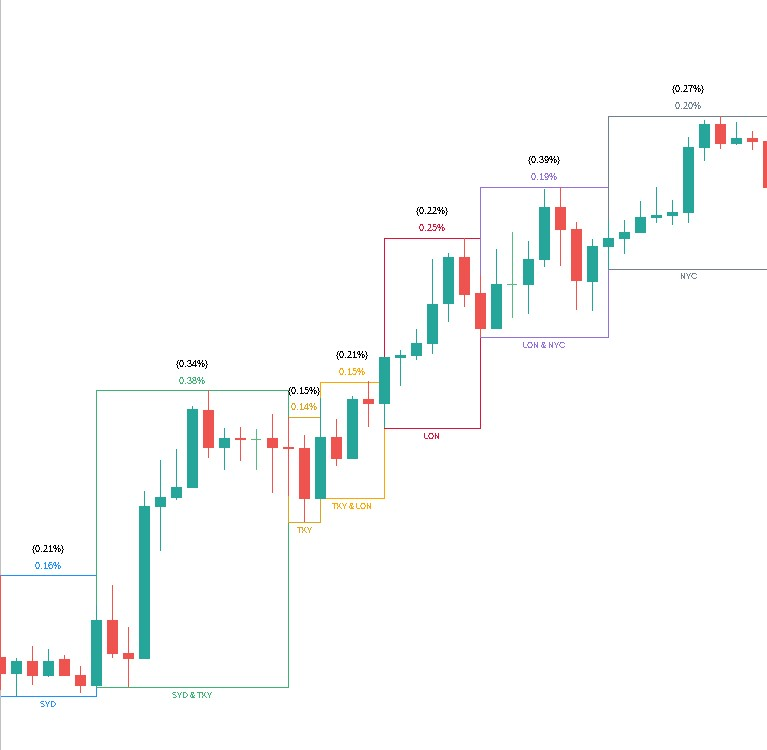
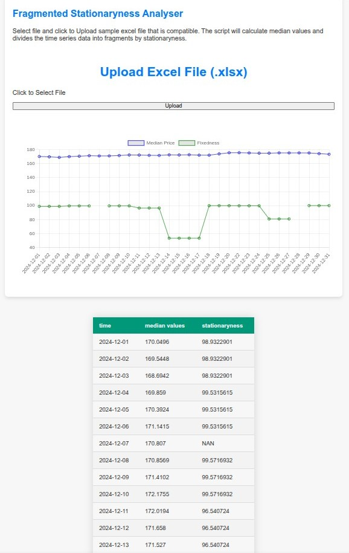
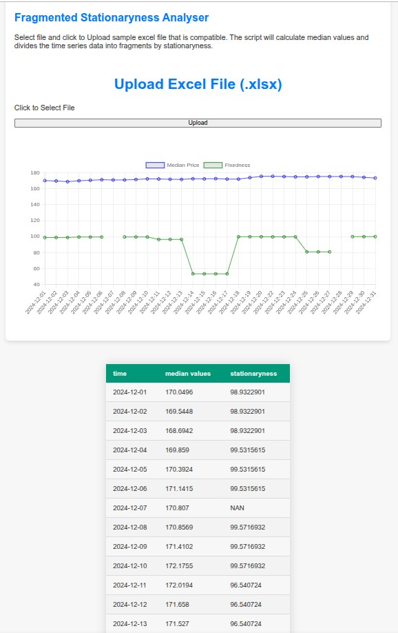
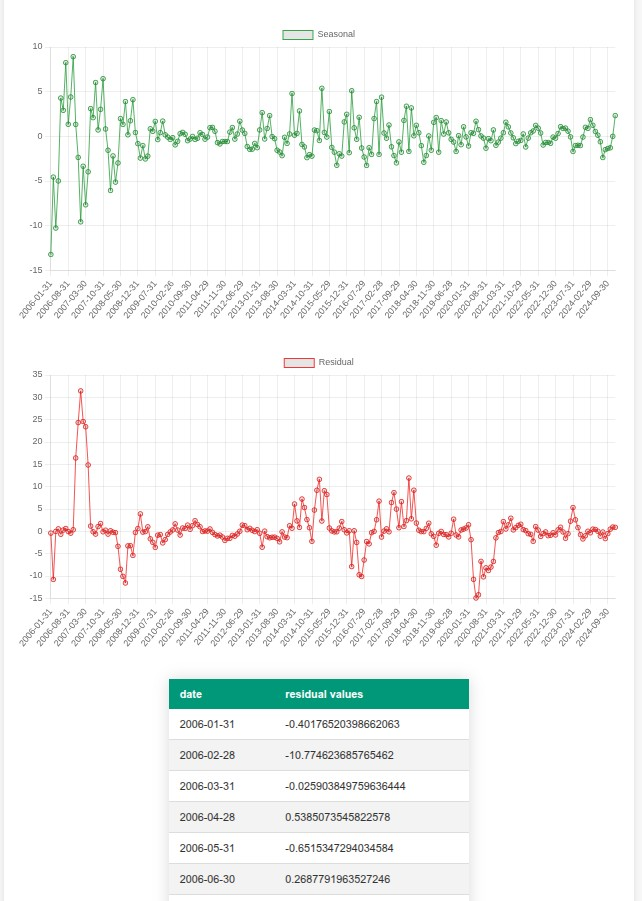
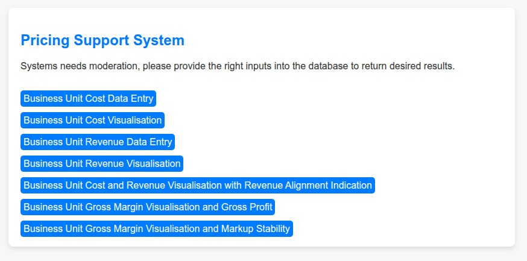
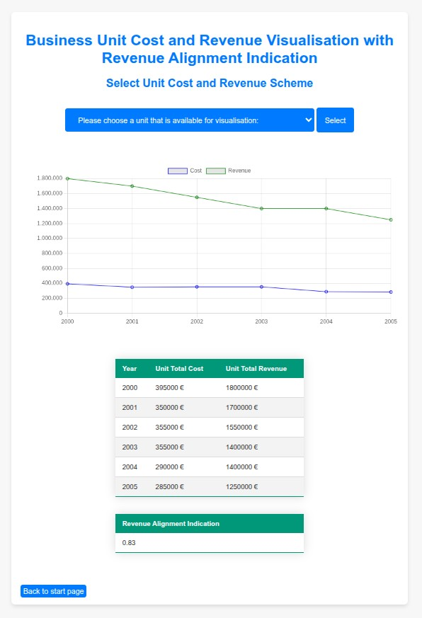

What are the Core Stages of an ML Pipeline
release #ml-headlines
Session Rectangle Indicator in Mql5
continuous release #descriptive
Technical indicators play a crucial role in identifying potential entry and exit points in the Forex market. At their core, technical indicators are mathematical transformations of price and market data that are designed to help traders analyze historical behavior and anticipate potential future price movements. By testing and combining different technical indicators, traders can gain deeper insights into market behavior and develop more informed trading strategies. In this context, I would like to introduce a new technical indicator that I have developed. The indicator analyzes historical chart data and divides it into predefined time sessions, allowing the price behavior of each session to be examined independently. In addition to displaying the price range for each session, the indicator calculates the **price range percentage** and provides a **reference average price range percentage** based on historical data for the corresponding session. This makes it possible to compare the current session's price movement with its historical average and potentially identify periods of unusually high or low volatility. The goal of this indicator is to provide a simple visual representation of how price typically behaves during different trading sessions and to help traders evaluate the current market environment in relation to historical session patterns.
Please take a look at the attached image for a visual example. I would greatly appreciate any feedback, suggestions, or comments regarding the indicator, its calculations, or potential improvements.

Python Flask application that calculates stationaryness in fragments for stat arb
continuous release #descriptive #diagnostic
Fixedness in time series data is sought after for various reasons. However taking one time series data as a whole and applying one formulation as a measure could be misleading in longer terms. I have created a linear regression adaptation test, to detect parts of serial data is stationary or not. This detection is done by taking all combinations of data with all the starting points, calculating correlation of parts to it's own linear stripe. Then placing the absolute correlation results to the original serial data.
With the help of this methodology, a more detailed analysis will be attempted by dividing time series into portions and detecting the most steady parts in a time series data. This algorithm is specially useful in longer series where underlying structural changes are inevitable. Therefore, an overall look at stationaryness is more reliable.
On the web interface, which is made with python flask, financial time series data is uploadable as excel file format to calculate stationaryness in fragments. You could download the app and test with sample data to evaluate. You could also test the app with your own data with applicable format in different periods of time series data. Please refer to end of github readme.md to change variables and test.

Python Flask application that calculates seasonal trend decomposition using Loess from excel input
continuous release #descriptive #diagnostic
LOESS, is a method for smoothing a series of data in which less assumptions are made about the underlying structure of the data. LOESS uses local regression to fit a smooth curve through a scatterplot of data.
This methodology is one of the effective tools to detect outliers in the data by combing out residual values from seasonality.
On the web interface, which is made with python flask, financial time series data is uploadable as excel file format to calculate loess elements. You could download the app and test with sample data to evaluate. You could also test the app with your own data with applicable data format in different periods of time series data. Please refer to end of github readme.md to change variables and test.


Python Flask application with Sqlite database to analyse cost and revenue data as a support system for pricing
continuous release #descriptive #diagnostic
This showcase of application is done to test how python flask framework works with sqlite database in a business application context. Each button is set to direct to related subpage for data entry and calculations. Calculations are done accordingly:
| Variable | Formulation |
|---|---|
| Revenue alignment | Pearson r correlation |
| Gross Margin | Gross Margin = 1 - (Cost / Revenue) |
| Gross Profit | Gross Profit = Revenue x Gross Margin |
| Mark Up | Mark Up = (Gross Profit / Cost) * 100 |
| Markup Stability | Inverse of ADFuller test |
An example set of data is provided as default setting inside the sqlite file to show example analysis. In this example analysis, to gain insight sampling is used. That is why, six years of sampling is done with different business divisions to analyse cost and revenue.

Chart.js worked well to present linecharts or multiline charts. Although the chart types were few, they were practical. Code optimisation isn't done on purpose, so that each route part can be just copiable.
